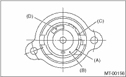

• Make sure the cutout of the reverse accent shaft is aligned with the opening of the reverse check sleeve.
• Turn the cam by hand to check for smooth rotation.
• Move the cam and shaft all the way toward the plate, and make sure it releases.
If the cam does not return properly, replace the reverse check spring. If the shaft does not return, check for scratches on the inner surface of sleeve. If the sleeve is in good order, replace the spring.

|
(A) |
Snap ring |
|
(B) |
Reverse check plate |
|
(C) |
Checking spring |
|
(D) |
Check cam |
• Select a suitable reverse accent shaft and reverse check plate.